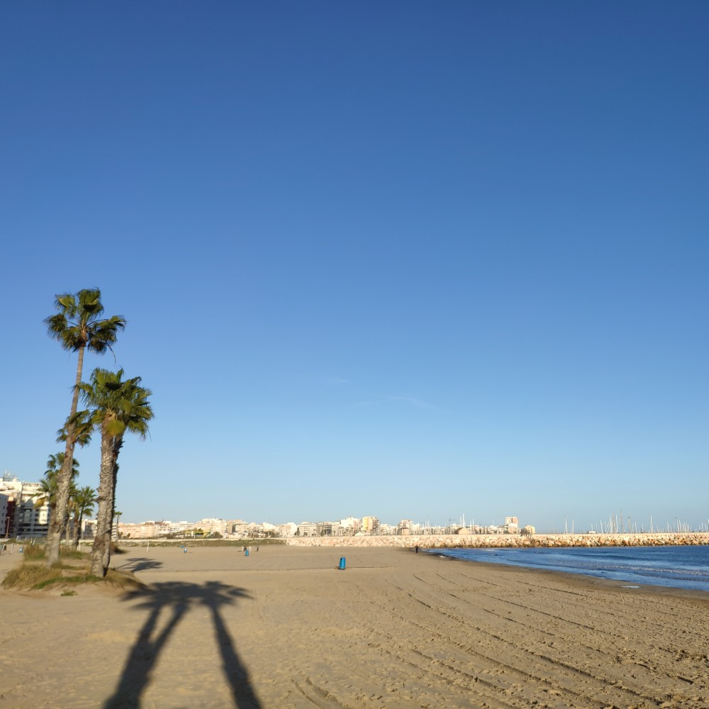

Playa de la Mata
Plaża de la Mata to największa plaża w Torrevieja o długości 2363 m i szerokości 47 m. Jest tu osiem boisk do siatkówki, jedno boisko do piłki nożnej i rowery wodne, w miesiącach letnich jest tu kilkanaście barów plażowych.
Plaża de la Mata to największa plaża w Torrevieja o długości 2363 m i szerokości 47 m. Jest tu osiem boisk do siatkówki, jedno boisko do piłki nożnej i rowery wodne, w miesiącach letnich jest tu kilkanaście barów plażowych.

Playa de los Locos
Playa de los Locos (plaża szalonych) nosi imię dawnego szpitala w pobliżu. Jest to piaszczysta plaża tuż przy wybrzeżu od Playa la Cura. Rozciąga się na długości 760 m i szerokości 27 m. W pobliżu dużo miejsc parkingowych, restauracje i bary. Bywa tu tłoczno.
Playa de los Locos (plaża szalonych) nosi imię dawnego szpitala w pobliżu. Jest to piaszczysta plaża tuż przy wybrzeżu od Playa la Cura. Rozciąga się na długości 760 m i szerokości 27 m. W pobliżu dużo miejsc parkingowych, restauracje i bary. Bywa tu tłoczno.

Playa del Cura
Playa del Cura jest uznawana za najlepszą plażę w mieście. Jest mniejsza niż Playa de los Locos (długość 375 m i szerokość 27 m). Też bywa tu tłoczno.
Playa del Cura jest uznawana za najlepszą plażę w mieście. Jest mniejsza niż Playa de los Locos (długość 375 m i szerokość 27 m). Też bywa tu tłoczno.
_-_panoramio.jpg")
Playa del Acequion
Playa del Acequion jest w zasadzie to kontynuacja Playa de los Náufragos po północno-wschodniej stronie nabrzeża solnego, w obrębie portu.
Playa del Acequion jest w zasadzie to kontynuacja Playa de los Náufragos po północno-wschodniej stronie nabrzeża solnego, w obrębie portu.


Playa de los Náufragos
Playa de los Náufragos, obok przystani i portu, stanowi kolejną popularną piaszczystą plażę. Jest również bardzo blisko miasta, z łatwym dostępem z centrum Torrevieja, co powoduje niestety zatłoczenie. Jest to długa i szeroka plaża – 325 m długości i 77 m szerokości. Ta plaża oznaczona Błękitną Flagą zapewnia trochę cienia dzięki palmom na piasku, jest też mały park wodny dla dzieci.
Playa de los Náufragos, obok przystani i portu, stanowi kolejną popularną piaszczystą plażę. Jest również bardzo blisko miasta, z łatwym dostępem z centrum Torrevieja, co powoduje niestety zatłoczenie. Jest to długa i szeroka plaża – 325 m długości i 77 m szerokości. Ta plaża oznaczona Błękitną Flagą zapewnia trochę cienia dzięki palmom na piasku, jest też mały park wodny dla dzieci.


Od Náufragos do Cala Piteras
Można się przespacerować (około 2 km) po zróżnicowanym tu brzegu morza. Są kawałki piaszczyste, żwirowe, skalne i trawiaste. Niedaleko wyjścia nad morze z mieszkania jest wygodna drabinka do zejścia do morza. Doskonałe miejsca do snorkelingu i podziwiania ryb. Tu na trawniku można też opalać się na leżakach.
Można się przespacerować (około 2 km) po zróżnicowanym tu brzegu morza. Są kawałki piaszczyste, żwirowe, skalne i trawiaste. Niedaleko wyjścia nad morze z mieszkania jest wygodna drabinka do zejścia do morza. Doskonałe miejsca do snorkelingu i podziwiania ryb. Tu na trawniku można też opalać się na leżakach.


Playa Cala Ferris
Na południowym krańcu Torrevieja znajduje się mniej znana mała, piękna plaża z palmami, małymi wydmami i krystalicznie czystą wodą. O świcie lub o zmroku usłyszysz także skrzeczące papugi. Jest to idealna plaża do pływania lub nurkowania z rurką. W czystych wodach można zobaczyć różne rodzaje ryb.
Na południowym krańcu Torrevieja znajduje się mniej znana mała, piękna plaża z palmami, małymi wydmami i krystalicznie czystą wodą. O świcie lub o zmroku usłyszysz także skrzeczące papugi. Jest to idealna plaża do pływania lub nurkowania z rurką. W czystych wodach można zobaczyć różne rodzaje ryb.

Cala Piteras
Jest niezbyt duża (123 metry długości i 15 m szerokości). Znakomita do pływania lub nurkowania z rurką. Ma jedną z najbardziej imponujących podwodnych łąk posidonii w okolicy. Trawa posidonia, która jest ważną częścią ekosystemu, rośnie najlepiej w czystej wodzie, więc jeśli ją zauważysz, to znak, że pływasz w jednej z najlepszych części Morza Śródziemnego.
Jest niezbyt duża (123 metry długości i 15 m szerokości). Znakomita do pływania lub nurkowania z rurką. Ma jedną z najbardziej imponujących podwodnych łąk posidonii w okolicy. Trawa posidonia, która jest ważną częścią ekosystemu, rośnie najlepiej w czystej wodzie, więc jeśli ją zauważysz, to znak, że pływasz w jednej z najlepszych części Morza Śródziemnego.